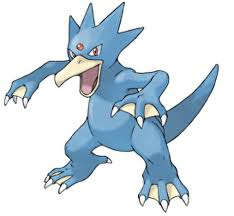
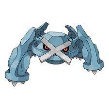
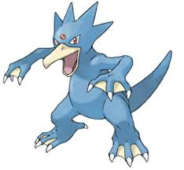
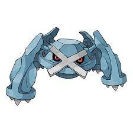
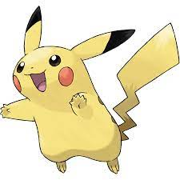
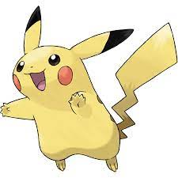

Pokémon, w Japonii Pocket Monsters (jap. ポケットモンスター Poketto Monsutā) – japońska franczyza rozwijana od 1996 roku, na którą składają się produkcje, w których pojawiają się fikcyjne istoty, zwane Pokémonami. Najpopularniejszymi dziełami z franczyzy są główna seria gier (Pocket Monsters Red i Green oraz jej kontynuacje) i serial anime Pokémon. Oprócz tego istnieją też inne gry i seriale o Pokémonach, a także gra karciana Pokémon Trading Card Game, mangi na podstawie gier i serialu, ponad 20 pełnometrażowych filmów anime na podstawie serialu i aktorski film pełnometrażowy.


 




 
